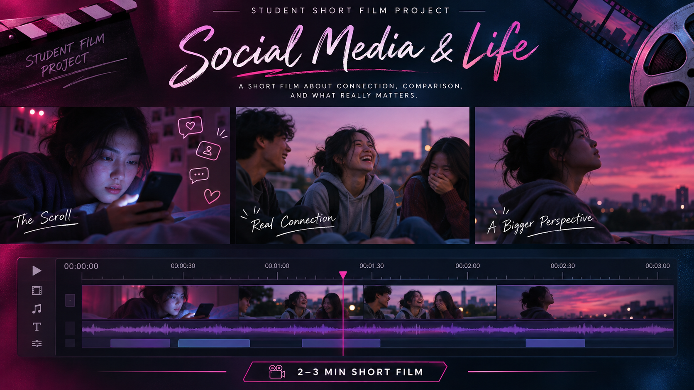

观点与叙事
选定受众和立场，用故事或例子让人理解。
固定挑战：制作一条关于“社交媒体如何影响我们的生活”的短片，可以从连接、比较、创作或信息判断中选择观点。
围绕社交媒体话题设计观点、分镜和声音，剪出有开头与结尾的短片。

作品可以用于展示自己的创作与表达能力，也可继续打磨成校园活动或个人作品集内容。
有清楚的受众、开头、观点和结尾；结合自摄、静态画面、旁白或 AI 素材，导出可播放版本。
2–3 分钟为目标，可结合静态画面和旁白；工具速度、素材与实际完成率需试课验证。
社交媒体如何影响生活，是学生可以从自身体验出发思考的话题。短片让他们把观点转换为有受众、有节奏的故事，也需要判断哪些说法有依据。
完成一条可播放的 2–3 分钟初版，用于课堂展示或继续剪辑；学生可以把创作过程放进作品集。公开发布需另行确认素材使用和人物授权。
2–3 分钟是课堂目标，可结合静态画面与旁白；不承诺全片为 AI 动态视频。
学生负责关键判断，用 AI 帮忙制作、测试与修改。
选定受众和立场，用故事或例子让人理解。
设计分镜、选择画面和配乐，并决定节奏。
核实引用事实，听取观众反馈，修改表达。
0:00–1:00 理解挑战与开始制作 / 1:00–1:10 休息 / 1:10–2:00 制作 / 2:00–2:20 休息 / 2:20–3:05 测试与改进 / 3:05–3:15 休息 / 3:15–4:00 展示与反馈
把这次的方法用到你关心的领域。